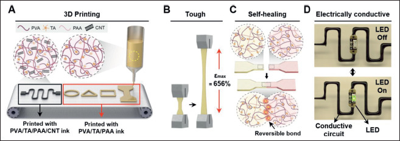

Why this research matters
This study 3D-prints stretchable conductive patterns from carbon-nanotube-filled hydrogel inks and tests electrical recovery after cutting and rejoining. Rejoining a cut printed circuit restored its ability to light an LED.
The problem
A conductive hydrogel ink needs to pass through a nozzle, hold its printed shape and recover after damage. These demands can conflict: a runny ink loses its shape, while a strongly elastic network is difficult to extrude. The study therefore examines flow behavior as well as the conductivity of the finished material.
How the study approaches it
Weak, reversible hydrogen bonds let the ink become less viscous during heated extrusion and help the network support its shape afterward. Within the tested temperature range, PVA/PAA without tannic acid (TA) remained mainly elastic and was less suitable for extrusion. TA adjusts the reversible network, while carbon nanotubes (CNTs) provide electrical paths; both roles matter to printing and recovery.

3D printing, stretching, self-healing and conductive-circuit demonstrations of multimaterial hydrogel inks.
Soo A Kim, Yeontaek Lee, Kijun Park et al.. “3D printing of mechanically tough and self-healing hydrogels with carbon nanotube fillers”. Figure 1. DOI: 10.18063/ijb.765. CC BY 4.0. Figure content is unchanged.
Source figure and caption ↗ · DOI: 10.18063/ijb.765 ↗ · CC BY 4.0 ↗
What was tested
The study tested flow and shape retention, then cutting, rejoining and mechanical recovery. Restoring an electrical path and restoring load-bearing strength are separate outcomes. Motion-sensing demonstrations show that deformation can produce a signal, but do not establish stable performance throughout prolonged wear.
What the study found
Cutting the printed circuit switched off its LED; rejoining it restored the light. This shows that electrical continuity returned. Separate resistance and mechanical tests are still needed to determine how fully resistance and strength recover, and the LED demonstration does not measure fracture toughness or long-term stability.
What remains to be answered
The demonstrations leave open performance under sweat, dehydration and prolonged repeated loading. Fair comparisons need matched hydration, print direction, line width, damage location and joined area, because these change the electrical and mechanical paths. Skin-contact demonstrations do not establish safety during chronic contact.
Related research
3D printing of conducting polymers
DOI: 10.1038/s41467-020-15316-7 ↗
Yuk and colleagues print PEDOT:PSS conductive paths with insulation. This hydrogel study instead examines how a CNT composite restores conduction after cutting and rejoining.
Bending PEDOT:PSS and cutting a hydrogel create different damage, so conductivity and healing ratios cannot be directly ranked.
Description drawing on the main textRESEARCH NEWS
Research in the news
No related stories are linked yet.
Sources used in this summary
The complete public full text and Methods were read and compared with the figures in the published PDF. S1–S11 and Table S1 in the five-page supplement were also read. Underlying data were not independently reanalysed and experiments were not reproduced.